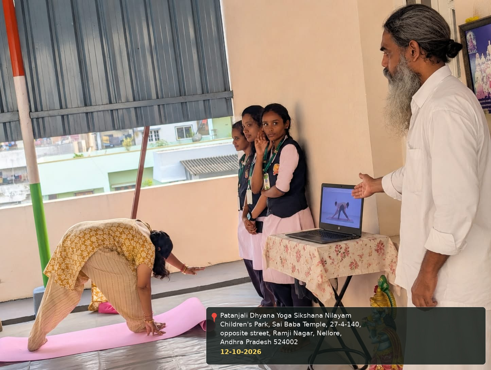
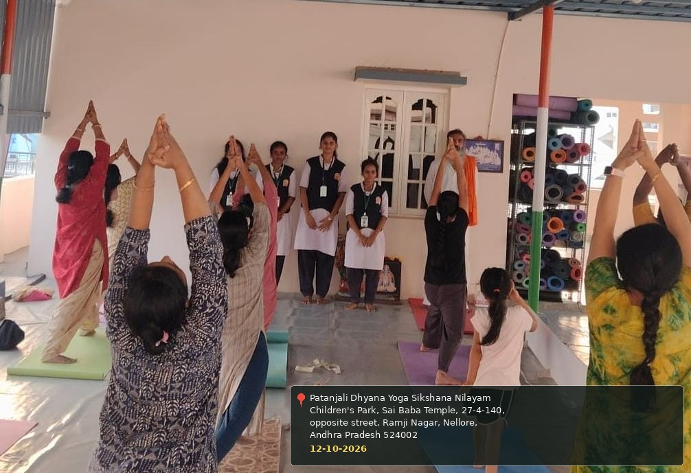

COMMUNITY SERVICE PROJECT
Week 1 Report
This week focused on understanding the community, introducing the Yoga Awareness and Practice project, and observing the project location and community interest in yoga.
| DAY | ACTIVITY | OBSERVATIONS / NOTES |
|---|---|---|
| Day 1 | Introduction to the Community Service Project | Introduced the project topic and discussed its purpose, objectives, and planned community activities. |
| Day 2 | Visit to the Project Location | Visited Patanjali Dhyana Yoga Sikshana Nilayam and the surrounding Ramji Nagar community in Nellore. |
| Day 3 | Interaction with Community Members | Spoke with community members about yoga in daily life, health habits, and their experiences. |
| Day 4 | Understanding Awareness and Interest in Yoga | Discussed basic yoga postures, breathing, relaxation, and common questions from beginners. |
| Day 5 | Planning and Weekly Review | Reviewed observations and planned future awareness activities, demonstrations, and team responsibilities. |


＋
Week 1 Activity Photo 2
Photo will be added here later.
← Back to all activities